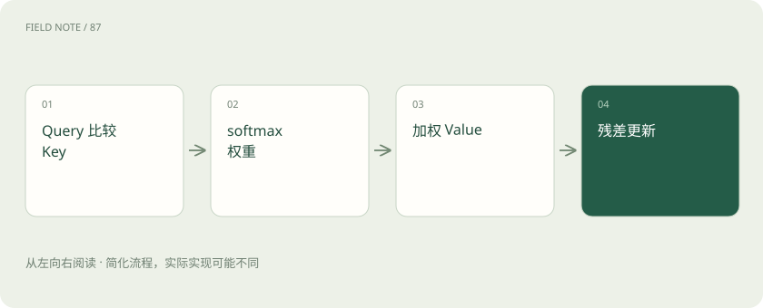
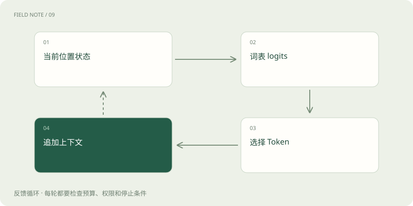

先读哪些知识
先用一个类比理解
类比只帮助建立直觉，不等同于技术的完整机制。
一图看懂
先固定研究对象
本章讨论常见的自回归解码器模型，而不是所有 Transformer。输入“设备温度过高，请”之后，模型要计算下一个 Token 的条件分布。它不是先在内部写好整段答案再逐字显示；每次生成后，新 Token 都成为下一次计算的条件。由此，早期一个错误选择可能改变后续整条路径。
文字如何成为向量
Tokenizer 按自己的词表将文字变成编号，Embedding 用编号取出可训练向量。编号大小没有语义距离，例如编号 100 与 101 不保证比 100 与 900 更相近。假设词表有 32000 项、隐藏维度为 4096，那么每个位置最初拿到 4096 个数；这只是形状示例，不对应某个产品规格。
位置不是附带装饰
只有词向量的集合不足以区分“甲追乙”和“乙追甲”。模型需要位置信息，具体可能通过位置向量、旋转位置编码等方式进入计算。因果遮罩又限制每个位置只能使用允许的历史。训练时可以并行计算多个位置，但不能让预测位置偷看真实未来，这解释了并行训练与逐步生成并不矛盾。
图解：一个位置的计算

注意力究竟混合什么
一个位置投影出 Query，其他可见位置提供 Key 与 Value。Query 与 Key 的相容程度经过缩放和 softmax，成为 Value 的加权系数。若玩具例子中三个位置权重为 0.1、0.7、0.2，输出就是三个 Value 的对应加权和，不是把第二个词直接复制出来。权重分布随层、头和上下文变化。
多头和残差如何接力
不同头可以学习不同的信息选择方式，但不能把某个头永久命名为“主语头”就当作可靠解释。多个头的结果组合后进入后续计算，残差连接保留原表示的通路，归一化帮助控制数值尺度。单层读不懂的远程关系，可以在多层表示更新中逐步形成；层数本身仍不保证事实正确。
FFN 与 MoE 的位置
注意力主要让位置之间交换信息，逐位置的前馈网络则对每个位置的表示做非线性变换。MoE 用路由器选择部分专家网络参与这一步，活跃参数可以小于总参数。它并不是调用多个独立聊天机器人投票；专家分配不均会造成容量压力，跨设备专家通信也可能抵消计算节省。
从隐藏状态到候选概率
最后一个位置的隐藏状态经过词表投影产生 logits。假设三个候选 logits 为 2、1、0，softmax 后约为 0.665、0.245、0.090。这里的概率是在该模型和上下文下的相对预测，并不是“答案真实概率”。词表中其他候选被省略只是为了展示公式，真实归一化要覆盖实际候选集合。
图解：生成反馈

采样改变决策而不增加知识
贪心选择最高概率候选；温度对 logits 缩放后再归一化；top-p 限制累计概率覆盖的候选集合。温度降低一般让分布更集中，但不能把错误知识自动变正确。同一提示多次输出不同，可以来自采样；稳定地重复错误，则可能来自模型条件分布本身，二者需要不同的排查方法。
缓存如何让路径延续
生成时，历史位置的 Key 和 Value 通常可缓存，因此下一步不必从头重复所有历史计算。新增位置仍需访问历史缓存，长上下文因此增加显存和读取压力。缓存是本次推理的中间状态，模型参数没有随聊天更新；将它与产品长期记忆混为一谈，会错误估计数据保留与资源成本。
用一条链解释能力边界
分词影响表达颗粒度，表示与注意力影响可利用的信息，FFN 和层叠提供变换能力，解码策略决定从分布中选哪条路径。任何一环都没有独立的事实核验承诺。理解整条链的价值，是把“模型答错”拆成条件缺失、关系理解失败、知识不足或生成决策问题，继而选择检索、训练或约束输出。
用干预检验直觉
理解内部计算还可以采用输入干预：保持问题不变，只替换一段证据，观察结论是否随依据变化；删除关键限制，观察模型是否开始越界。这样的行为实验不能直接揭示某个神经元的含义，却能检验系统是否依赖应依赖的信息。
例如原文写“仅总部适用”，改成“仅分支适用”，其余词完全相同。如果答案仍稳定套用总部规则，问题可能在范围理解或指令遵循，而不只是分词。这类成对问题也能用于比较检索和提示词方案，避免只用一个成功答案推断整个机制可靠。
放在一起对比
| 环节 | 改变对象 | 不能单独保证 |
|---|---|---|
| 检索 | 可见材料 | 正确使用证据 |
| 微调 | 参数与行为倾向 | 知识永不过时 |
| 采样 | 候选选择 | 事实正确 |
放进真实场景
假设“请先关闭”与“请继续运行”在某个上下文中分别占据较高概率路径，提供设备手册可能改变注意力可用内容及最终分布；仅把温度从 1 改成 0.2，只会集中已有分布。排查时先核对手册是否进入上下文，再检查答案是否遵守它，最后才调采样。
别踩这个误区
想一想
为什么概率最高不等于事实最可靠？
概率来自对训练模式与当前条件的预测；当前条件可能缺少证据，训练中也可能包含错误与过时内容。
关联阅读
资料与边界
本文为原创知识讲解。类比和图示经过简化；示例数字不代表实测或报价。整理日期：2026-11-04。文末列出对应技术的原始资料，具体功能与版本支持请以原文为准。